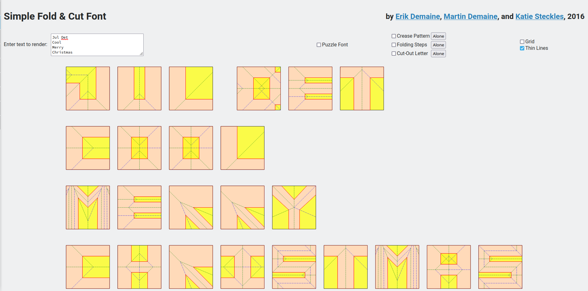

Hvad er det laveste antal lige klip, I kan nøjes med for at klippe pakken ud?
Linket er: https://youtu.be/Qttl0VfVw_E
Linket er: https://youtu.be/ZREp1mAPKTM
Kan I klippe nissehuen og peberkagehuset ud med kun ét lige klip?
Linket er: https://youtu.be/831ifSbTxlI
Linket er: https://youtu.be/-VfCnEzXohM
Linket er: https://youtu.be/YT-xO15pVng
Katie Steckles viste det faktisk ved 2:50
Kan I i fællesskab få skrevet
Jul Det Cool
Merry Christmas
https://erikdemaine.org/fonts/simplefoldcut/

Hvor meget sejt matematikjulepynt kan I nå at lave og hænge op?
Matt Parker har også foldet og klippet en flagermus i anledning af halloween.
Linket er: https://youtu.be/1K-uEwD0OTg